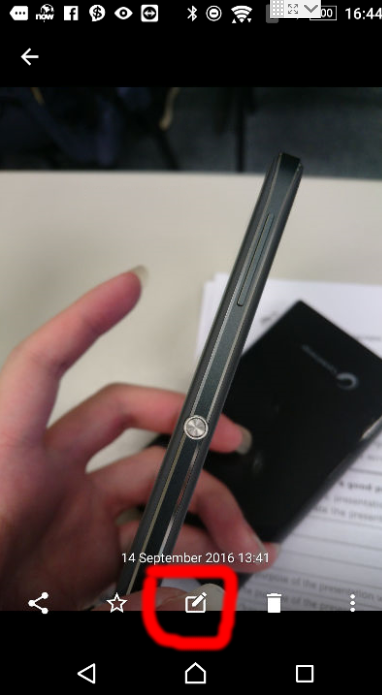
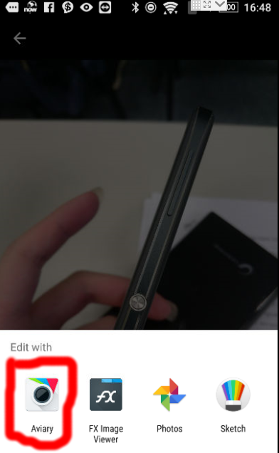
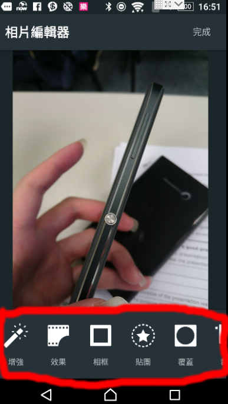
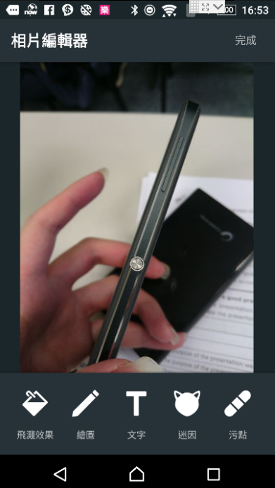
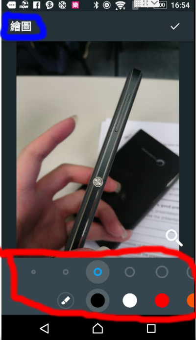
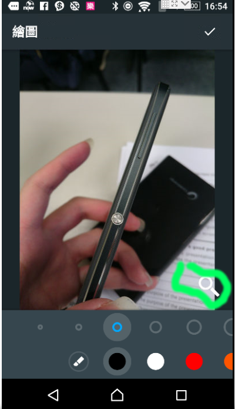
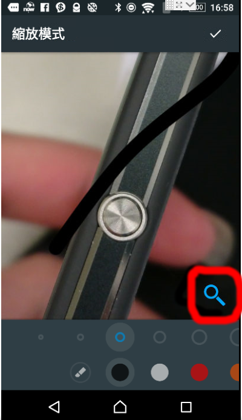
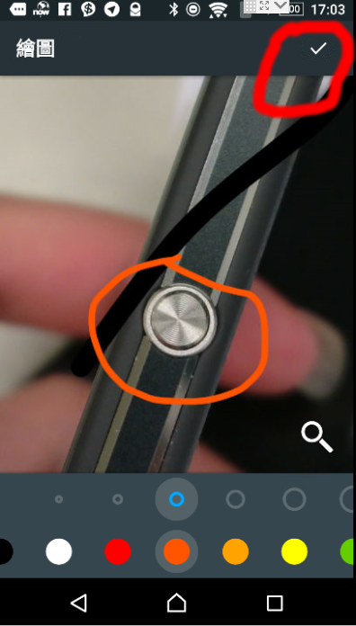
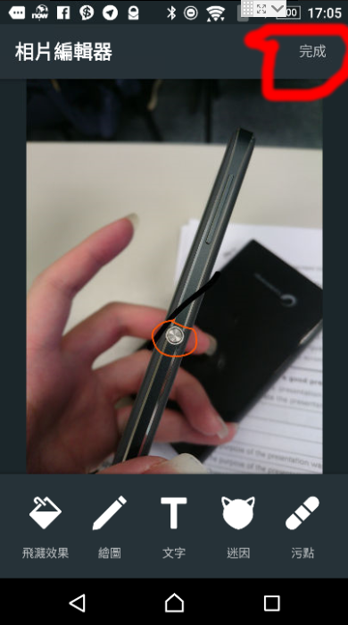
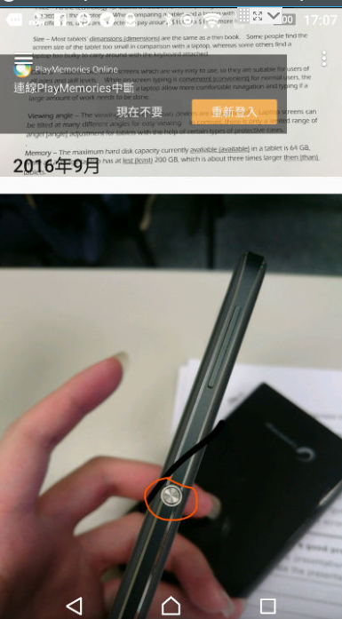

首先確定自己手機有安裝 「Aviary」呢個程式，無嘅話點擊呢度下載
之後打開相片庫，點開你要編輯嘅相，並點擊個編輯圖示（紅圈位）
選擇Aviary（紅圈位）
左右拉動下面嘅工具列（紅圈位置），搵到支叫做繪圖嘅筆
選擇「繪圖」
之後左上角（藍圈）會話你知宜家用緊「繪圖」工具，下面嘅工具列（紅圈）可以選擇顏色同粗幼
撳「放大鏡」公仔（綠圈）可以切換到縮放模式並且放大鏡會呈現藍色，可以拉大縮細圖片
撳變咗藍色嘅放大鏡（紅圈）可以回到原本嘅繪圖模式
畫你要畫嘅嘢，之後可以撳右上角嘅剔號（紅圈）儲存操作，或撳返回掣取消操作。
預覽編輯好嘅圖片，確認完成後，撳右上角嘅「完成」嚟儲存做新嘅圖片
重新開啓圖庫，就可以見到改好咗嘅圖片